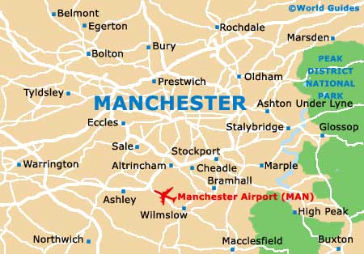

Home Manchester Christmas Market Family Events National Football Museum Halloween events
If you are looking for information about the latest events or suggestions for days out, call into Manchester Visitor Information Centre where the knowledgeable team can help make the most of your trip to Manchester.
The centre stocks a range of leaflets and a city centre map, along with tickets for the Sightseeing Bus and Mountain Goat Day trips.
Welcome to the official site of Greater Manchester where you can search for things to do and find out what's on, as well as getting inspiration for your visit to this fantastic city region. Youthful, diverse, energetic and bursting with character; Manchester is one of the most exciting places to visit in the UK right now where everybody and anybody is very warmly welcomed. Known throughout the world as the birthplace of the industrial revolution, Manchester has a proud history in science, politics, music, arts and sport. And today the city combines this heritage with a progressive vision to be a city that delivers surprise and delight in equal measures. Manchester city centre is jam-packed with unique and eclectic restaurants, bars, shops, museums, galleries, hotels and places to stay whilst the surrounding Greater Manchester boroughs offer a patch-work of visitor experiences including quaint market towns, traditional pubs and beautiful green spaces and waterways to be explored on foot or bike. The city region is easily navigated, with great transport links both in and around Greater Manchester. Furthermore, a packed calendar of world-class events and festivals – from the landmark Manchester International Festival to the enchanting Manchester Christmas Markets 2020 – mean there’s always another reason to visit Manchester.